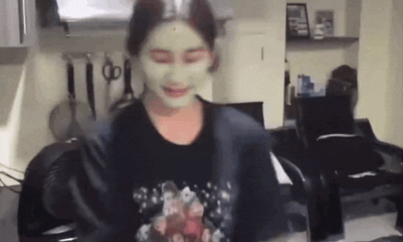

HOME


Sheena Mae Catacutan (born May 9, 2004) better known as Sheena, is a Filipino artist and performer.
She is the youngest member and main dancer of the Filipino girl group BINI.
She entered as a trainee in Star Hunt Academy in 2019.
Profile
- Sheena's favorite colors are Black & Purple.
- Sheena’s hobbies are dancing, singing, browsing social media and eating.
- Her special talent is the ability to bend her thumb.
- Sheena’s favorite SHA subject is dancing.
- Her Favorite Motto is:” Never give up. Don't ever think of giving up.”
- Popular line: "Eyy ka muna, eyy!"
- She loves sweets and bonchon.